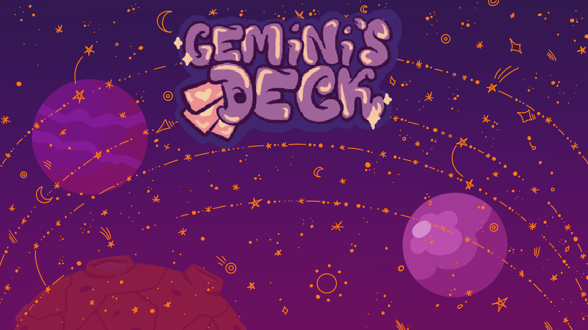
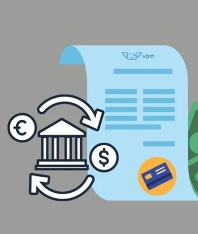
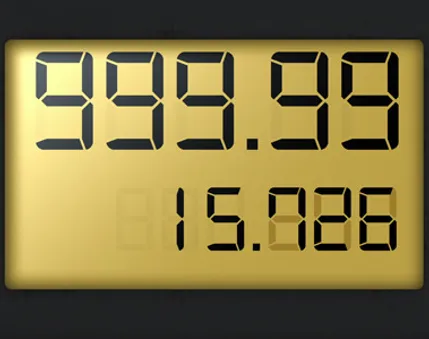

Gemini’s Deck
Gemini’s Deck is a “Street Fighter” like story-driven action game that goes through the actions of a colorful cast of magically gifted characters. Through the gathering of cards, the player gains more and more parts of our story and new characters to fight with. Through multiple locations, players will experience settings from all around the world, such as Ireland, Peru, and the Caribbean.
View ProjectSymptoms Analyzer

The Symptoms Analyzer application detects and analyzes the most probable disease a person might suffer from through basic medical questions. Made use of GUI to design the user interface using netbeans as the integrated development environment(IDE). Brainstormed ideas, developed algorithms, and presented the idea all within the span of 48 hours through team work.
Watch DemoCurrency Converter
Developed a 'Currency Converter' program that converts currency with real-time rates. Self-learned APIs, inheritance, and polymorphism. Presented the project confidently and comprehensively during the ‘Knowledge and Human Development Authority (KHDA) inspection in front of computer professionals.
View ProjectATM
The ATM program will allow the customers of a bank to access their checking or savings accounts and deposit or withdraw money depending upon the choice of the user. An account is distinguished from another account with the help of unique account numbers which can be accessed with their respective PINs.
View ProjectGas Pump Display
Many gas pumps have displays that spin digits (either analog or digital) while the gas is being pumped into your car’s gas tank. The display’s digits change to indicate the amount of gas in the tank and the current price.
View Project